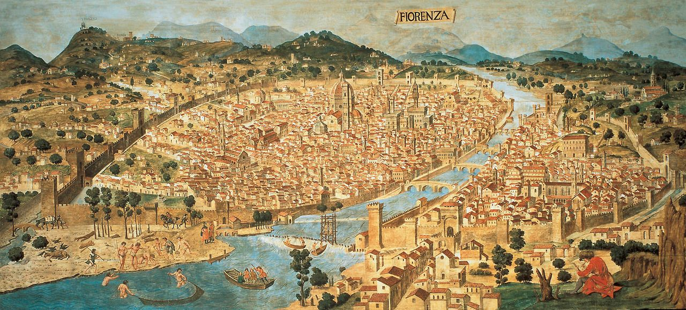

The Italian Renaissance
Taught: Spring 2021

History 3334 introduces students to one of the most distinctive time periods in European history, the Italian Renaissance. The course concentrates on the Italian peninsula from the rise of urban communes in the 12th century to Spanish and Imperial political dominance in the 16th century. The course will investigate a variety of actions, ideas, and beliefs through primary sources and examine a number of ways that historians have attempted to understand this exciting time period. The course is divided into five sections. The first section discusses late medieval Italy. It discusses the rise of Italian cities and trade in the Mediterranean from the 11th century to the demographic crisis caused by the outbreak of the Black Death in 1347 and the reoccurrences of the plague in the second half of the 14th century. The second section of the couse focuses on the quattrocento, highlighting the urban nature of the Renaissance. The third section of the course moves to questions about the state in the Renaissance and is centered around the reading of Machiavelli’s The Prince and selections from The Discourses. The fourth section investigates the changing world from the late 15th century as European exploration expanded and learning increasingly turned from the reading of ancient texts to the study of nature. The final section discusses the waning of the Renaissance and takes on the question of periodization and defining the Renaissance.
Throughout the five sections primary sources, secondary literature, and the lectures will focus on questions of the urban nature of the Renaissance, the increased interest in the recovery of the culture of ancient Rome, and the significance of debates over social, political, and cultural legitimacy.
This course was taught in Spring 2021 during the Covid-19 pandemic and was conducted remotely. Lectures were delivered by video and there was a 50-minute discussion each week over Zoom.